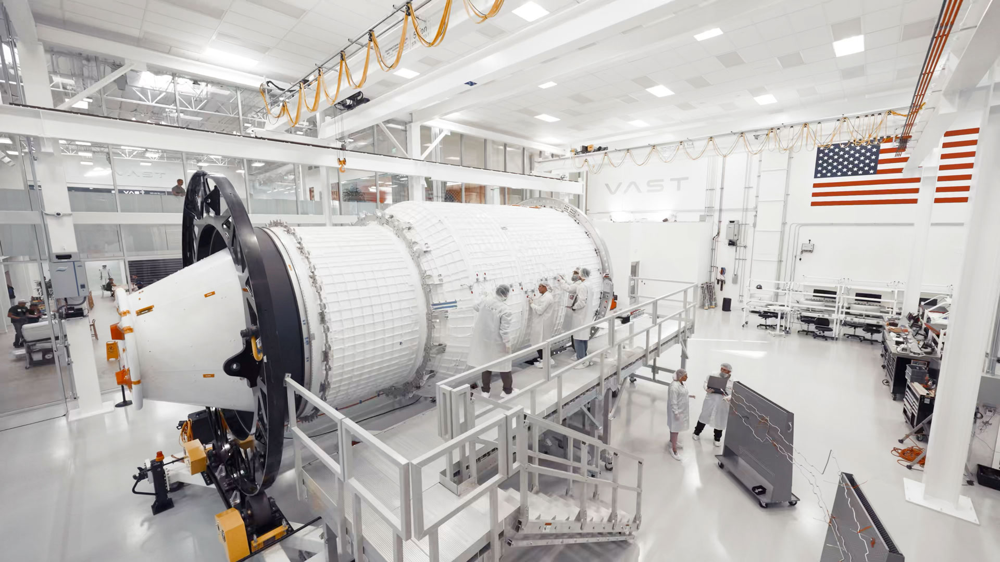
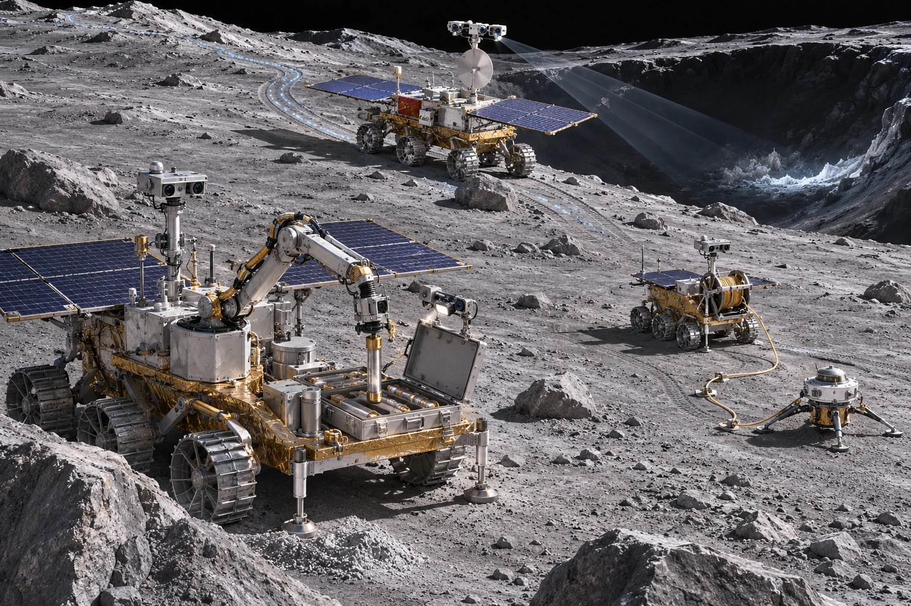
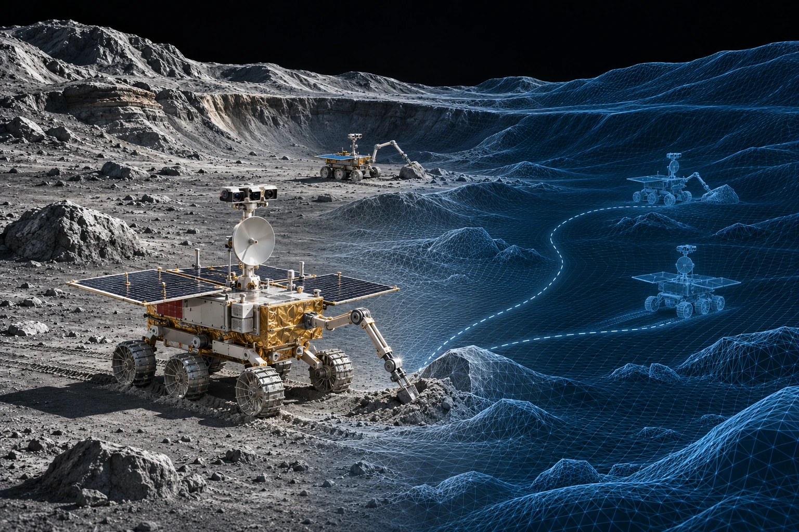
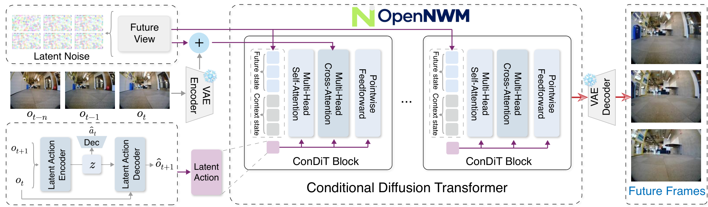
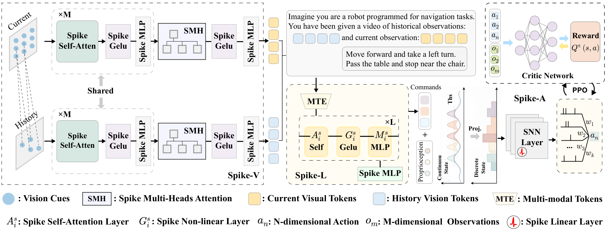

Robotic Systems
Robot bodies, mechanisms, actuation, end effectors, and integrated sensing across wheeled, legged, and mobile-manipulation platforms for space operations.
- Wheeled & quadruped platforms
- Mechanisms & tools
- System integration

Three connected foundations for robotics beyond Earth.
Robot bodies, mechanisms, actuation, end effectors, and integrated sensing across wheeled, legged, and mobile-manipulation platforms for space operations.


Physics-based simulation and learned world models for terrain interaction, action-conditioned prediction, policy development, and evaluation before deployment.
Papers and open research resources.


2026 · Survey · arXiv:2608.21358

ICML 2026 · arXiv:2606.27807
OpenSpace Lab investigates robotic systems, embodied intelligence, and world models for future space operations. We connect research in navigation, manipulation, prediction, and efficient computation.
Our current work includes research models, ground-based robotic demonstrations, and a review of space-resource robotics. Explore the projects and publications above for methods, results, and open resources.